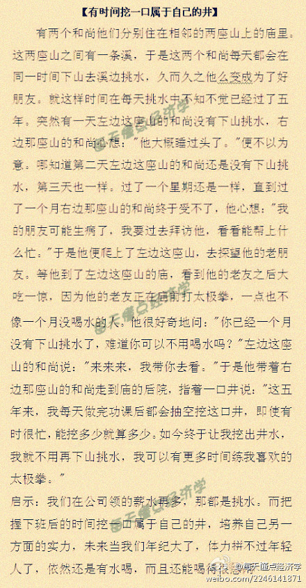

正在收集一些同事们同行们写的技术博客, 写技术博客这事儿, 不轻松也不赚钱, 公司老板那里也不算KPI, 但我总觉得, 这行为就属于"挖一口属于自己的井".@趣味儿经济学:【有时间挖一口属于自己的井】有两个和尚他们分别住在相邻的两座山上的庙里。这两座山之间有一条溪，于是这两个和尚每天都会在同一时间下山去溪边挑水，久而久之成为好朋友。就这样不知不觉已经过了五年。突然有一天左边这座山的和尚没有下山挑水。。。 
一直想为大部头技术书籍翻译实践一下社区化的众包模式. <失控>一书的翻译实践完整地再现这一过程, 而且, 这一过程也验证了<失控>里提到的是以蜂群思维和层级架构为核心的互联网协作模式 － “失控”的协作与进化 网页链接